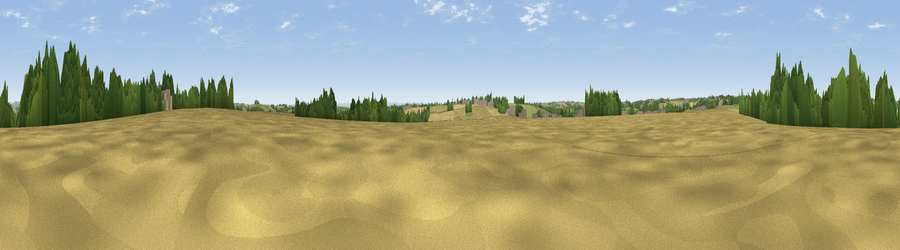

Viewpoint near Elkstone
#27573 in England · top 56% of its area beats it · near ElkstoneWhere it is
The exact computed spot (SO 96275 13125). Click the marker for map links.
The view, rendered

A 360° render of this exact spot computed from the terrain model, tree cover and land cover — summer colours, afternoon light, calibrated against photographs of famous viewpoints. Real trees, hedges and buildings will differ in detail.
The panorama
Grey silhouette: terrain skyline in each direction (720 bearings, Earth curvature and refraction included). Dashed green: skyline with trees (+15 m) and buildings (+8 m) as obstacles. Blue strip: how far the ground is visible on each bearing.
Where the view opens
Wedge length = distance to the farthest visible ground on that bearing (vegetation-aware). Rings at 10, 25 and 50 km.
What fills the view
60% cropland · 28% grassland · 11% woodland ·
Angular shares of the visible panorama (visual magnitude), not map area. Landscape diversity 0.41 (0–1 Shannon).
Key numbers
More beautiful places nearby
The staircase of upgrades: each row has a higher view potential than everything closer. Driving times are estimates from straight-line distance, calibrated against real road routing — check an actual route before setting out.
| Place | Direction | Drive | Score |
|---|---|---|---|
| Viewpoint near Elkstone | SSW · 1 km | ~4 min | 49.9 |
| Pen Hill | ESE · 3 km | ~8 min | 66.4 |
| Birdlip Hill | WNW · 4 km | ~9 min | 71.7 |
| Viewpoint near Witcombe | NW · 5 km | ~10 min | 72.2 |
| Viewpoint near Leckhampton | NNW · 5 km | ~12 min | 77.8 |
| Viewpoint near Great Witcombe | WNW · 7 km | ~15 min | 80.5 |
| Nottingham Hill | N · 15 km | ~27 min | 80.9 |
| Viewpoint near Bredon's Norton | N · 27 km | ~43 min | 81.3 |
51.81674, -2.05544 · source: screening · position refined by local search. Computed location — check access rights before visiting.